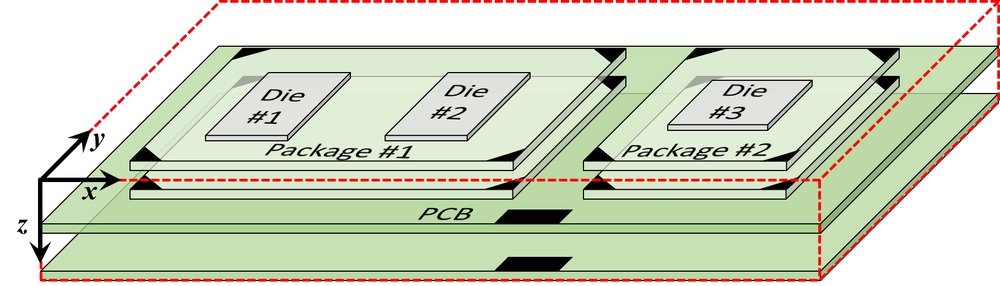

Table of Contents

| Home | User Guide | Examples | Download
(from GitHub) |
How It Works |
Table of Contents |
|
|
Acorn was developed and tested in a Linux environment, and requires the user
to download and then compile the C source code into the Acorn executable file,
acorn.exe. In the directory that contains the
makefile,
.c, and
.h files, type the following command from a
command-line: $ make For the make command to
work, your system must have the GNU Compiler Collection,
gcc, and the GNU Make software. The compiler must also have access to the following
four libraries: Math (which is included in GCC), OpenMP
(also included in GCC), LibPng, and the
GD Graphics Library. The latter two libraries can be
installed on Red Hat-based Linux distributions using the following commands: $ yum -y install libpng-devel $ yum -y install gd-devel Once you've compiled Acorn into the acorn.exe executable, copy this file to a working directory and launch Acorn from the command-line using the following command: $ acorn.exe
<input file> > logfile.txt The <input file>
is a text file that describes the silicon chip, package, and/or PCB, in addition to the locations
of the start- and end-terminals of each net. There are hundreds of examples of such input files
in the tests subdirectory. To get started, try
a small example such as
4n_800x_500y_4L_obstacles_wide_vias.txt. In other words, copy this text file to the
working directory that contains acorn.exe,
and type the following command: $ acorn.exe
4n_800x_500y_4L_obstacles_wide_vias.txt >
logfile.txt Depending on how fast your computer is, and how many cores it contains, the program should take a few minutes to complete. (30 seconds with 16 threads is typical.) As it's running, you can monitor two output files: the logfile.txt file (using the Linux less program, for example) and the routingStatus.html file using your favorite web browser. The latter file will be created in the working directory from which you launched Acorn. As a reminder, you can open this file from a browser using CTL-o (or CMD-o on Macs) and navigating to the working directory to open routingStatus.html. As shown in the example screenshots below (and at this link), the top of the web page provides the current status. Near the top of the page are a graph of routing metrics and an animated display of the routing for each iteration. Incidentally, if you'd like Acorn to use fewer threads than
are available on your system, you can use the -t
switch to specify the number of threads. For example, if you'd like Acorn to use only 2 threads,
invoke Acorn like so: $ acorn.exe -t 2 4n_800x_500y_4L_obstacles_wide_vias.txt > logfile.txt |

|
|
As noted above in the Installation section, Acorn
is launched from a Linux command-line with a text file as an argument. The
STDOUT output of this command should be redirected
to a log file for potential analysis during/after the Acorn run. For example, fatal errors will result
in descriptive error messages at the bottom of this log file. The input text file describes the silicon chip, package, and/or PCB, in addition to the locations of the start- and end-terminals of each net. Instructions for creating such input files are provided below in the Creating Your Own Routing Cases section. But to demonstrate the output of Acorn, let's first use one of the existing input files from the tests directory: 8n_800x_500y_4L_obstacles_diffPairs_PNswappable_costZones_designRuleZones. This small test-case contains 8 nets consisting of 4 differential pairs. As shown in the perspective view at right, there are 4 routing layers and 3 intervening via layers. As shown, there are various obstacles of various shapes and sizes. After copying this file to an empty working directory, we launch this test-case using the following command, directing the STDOUT output to file logfile.txt. $ acorn.exe
8n_800x_500y_4L_obstacles_diffPairs_PNswappable_costZones_designRuleZones >
logfile.txt Within moments, the new file routingStatus.html will be available in the working directory. Open this file using your favorite web-browser to display Acorn's output, which should look like the image below. (Click on the image below to open a live version in a new browser tab.) |

|
|
After each iteration, Acorn updates the output page above. For example, after the fourth iteration, the same page will appear as shown below. (Click on the image to open a live version in a new browser tab.)
|
When Acorn completes the routing, the above page will be updated to reflect the completed status, as shown below. (Click on the image below to open a live version in a new browser tab.)
|
Acorn does not currently read data from industry-standard files with netlist data, layer data, etc. Instead, this data must be formatted into a single text file whose format is described below.
A full description of the input file's syntax is available at this link.
Acorn requires that the input file contain the number of routing layers used for traces, in addition to names for these layers and the intervening via layers. Acorn also requires the lateral extents (dimensions) of the largest layer be included in the file. Another important dimension is the grid resolution that Acorn will use to break up the layers into a grid.
As an example, assume we wanted to use Acorn on a design like that shown at right,
which includes two PCB routing layers, two layers on each of two packages, and
one routing layer on each of three silicon die. In this example, there are five
routing layers and four intervening via layers. Defining these would require the
number_layers
and layer_names
statements in the input file:
The above two statements define information along the Z-axis, as denoted by
the coordinate system shown at right. Note the two consecutive forward slashes
( |
 |
To define the size in the X-Y plane, we specify the maximum extent of
the routing region in the X- and Y-directions using, respectively,
width and
height statements:
width = 14000 // 14,000 microns wide
height = 7000 // 7,000 microns high
The above two statements specify the lateral sizes of the entire routing region, regardless of the layer. In this example, only the two PCB layers are 14 mm wide by 7 mm high. The package and die layers are subsets of these sizes. We will define the smaller dimensions of the packages and die later on, as described in the Keep-out Areas section.
Finally, Acorn requires that the input file define a resolution. This
dimension, expressed in microns, defines the size of the square-shaped cells that Acorn
uses to define traces, vias, and all other shapes in the design. This is done with a
grid_resolution
statement, as in the following example:
grid_resolution = 12.5
// Grid size in microns
A reasonable rule-of-thumb is to define the grid resolution to be approximately one third the width of the narrowest trace or via in your design. For large designs, however, small grid resolutions will result in a large number of grid cells, leading to longer run-times during the autorouting process. For a design of up to 10 layers, the number of cells in a given layer should not exceed approximately 2000 by 2000 cells (approximately 4 million cells per layer). To maintain reasonable run-times, the following table suggests the minimum grid resolution values for a variety of design sizes. Larger grid resolutions can significantly reduce run-times.
| ||||||||||||||||
The list of nets are contained between the following two statements:
start_nets and
end_nets. Each line contains one net. A simple
example with six nets is shown below:
start_nets
# Net Start Start Start End End End
# Name Layer X Y Layer X Y
# ----- ------- ----- ----- ------- ----- -----
net1 Die_Top 2500 3000 Die_Top 4900 2800 // Net connecting Die #1 and Die #2.
VDD Die_Top 2600 3000 PCB_M1 100 6800 // Connection to Die #1.
DP1_P Die_Top 5000 2800 PCB_M1 6000 100 // Connections to
DP1_N Die_Top 5000 2900 PCB_M1 6100 100 // Die #2.
DP2_P Die_Top 11000 3100 PCB_M1 13800 4000 // Connections to
DP2_N Die_Top 11080 3100 PCB_M1 13800 4150 // Die #3.
end_netsIn the above example, note the three lines that start with a hash
(#) character in the first column. This character
creates a full-line comment.
In each line of the example above, a case-sensitive net name is the first token on the line. This is followed by the the coordinates of the net's start-terminal, starting with the name of the routing layer and the X/Y coordinates, in microns. The origin of the X/Y coordinate system is always the lower-left corner of the routing region, as indicated in the diagram above.
The next three tokens on the line are the coordinates of the net's end-terminal. Again, a triple of tokens is used: layer name, followed by the X/Y coordinates (again, in microns as measured from the system's origin).
Sometimes it is helpful to identify certain nets as special because,
e.g., because they should be routed with different design rules from other nets.
Identifying such nets is done in the net list between the
start_nets and end_nets
statements. Examples of these are covered below in the
Design Rules section.
To define which parts of a layer may be used for routing, Acorn uses
two types of statements:
block and
unblock. Complex shapes may be created using
combinations of these statements. Using the previous chip-package-PCB example,
a handful of block and
unblock statements can define the boundaries
for the routing layers on the three chips, as depicted at right. These
boundaries could be achieved using a block
statement to block the entire layer, followed by three
unblock statements to unblock rectangular
regions for each of the three die. These statements are shown below:
|
The effect of the above four statements is to create three rectangular routing regions, as indicated by the white rectangles in the inset figure above.
Keep-out regions are likewise defined on other layers. For example, the regions
for the two packages can be defined with block
and unblock statements like those below. These
are similar to the statements above for defining the die layers, but with the
addition of triangular keep-out regions at the corners of each package, using
the block TRI statements:
|
The effect of the above 11 statements is to create the two
regions for package routing, as indicated by the white areas in the inset figure
above. Note that the order of the block
and unblock statements is very important. Each
unblock statement 'erases' the effects of a
previous block statement, but has no effect on
subsequent block statements.
A similar series of statements must be repeated for each
routing layer in the package. In the example depicted in the figure above,
which contains two routing layers in each package, the 11
block / unblock
statements would be repeated with 'Pkg_M1' replaced by
'Pkg_M2'.
Keep-out regions are not limited to routing layers. The
block and unblock
statements can also define keep-out areas on via layers. This is
helpful in defining locations for vias with predefined arrays, such as C4 bumps,
copper pillars, solder balls, etc. The necessary statements are similar to the
those above for defining the die and package layers, but with the use of
circular regions at the site of each via, using
unblock CIR statements, as shown below:
|
The effect of statements like the above
block and unblock
statements is to create arrays of vias like those shown in the two insets
of the diagram above. In this case, layer 'C4' would contain three
arrays of vias (one for each die). Layer 'BGA' would require
another set of block and
unblock statements to define the sites of allowed
vias between the PCB and the two packages.
Large arrays of vias, of course, require many
unblock statements (one for each via). But once
these statements are created, they can be reused again and again for common
arrays of vias.
In Acorn, design rules define the minimum widths of traces and vias, in addition to the minimum spacings between these shapes. Also, design rules specify the distance between the two traces of a differential pair. Finally, design rules specify the allowed directions that nets can be routed. For example, Manhattan (90°) routing could be used on the die while 45° routing could be used on the PCB.
Acorn groups design rules into sets. For example, a design-rule set can specify the minimum linewidths, via diameters, and spacings. Each set of design rules is then applied to one or more regions of the routing space. For example, design rules for PCB routing could be applied to multiple layers of a circuit board. A separate set of design rules could be applied to the layers of a package. A third design-rule set could be applied to the topmost layer of the die. In this manner, traces and vias can have different sizes depending on their location in the design.
Defining a design-rule set is done using the
design_rule_set and end_design_rule_set
statements in the Acorn input file. To apply a given design-rule set
to one or more specific regions of the design,
DR_zone
(design-rule zone) statements are used. The combination of design-rule sets
and zones provides significant flexibility in defining the routing rules
throughout the design.
Acorn also allows for net-specific design rules. For example,
if you want all power and ground nets to be wider than signal nets, this can be
accomplished using
exception statements. Such statements could
also be used to increase the spacing between an especially sensitive analog net
and its neighbors. As noted in the syntax documentation for
exception statements, each exception is
assigned a unique name. You can associate these names with one or more nets
in the netlist, as shown in the following example:
start_nets
# Net Start Start Start End End End Exception
# Name Layer X Y Layer X Y (optional)
# ----- ------- ----- ----- ------- ----- ----- ---------------
net1 Die_Top 2500 3000 Die_Top 4900 2800 Large_Spacing
VDD Die_Top 2600 3000 PCB_M1 100 6800 POWER_GROUND
DP1_P Die_Top 5000 2800 PCB_M1 6000 100
DP1_N Die_Top 5000 2900 PCB_M1 6100 100
DP2_P Die_Top 11000 3100 PCB_M1 13800 4000
DP2_N Die_Top 11080 3100 PCB_M1 13800 4150
end_netsIn the above example, net net_1 would be
routed using the design rules defined in the exception named
Large_Spacing. Likewise, net VDD would be
routed using the design rules defined in the exception named
POWER_GROUND.
As a net routes from one design-rule zone to another, e.g., from the
package to the PCB, its linewidth and spacing may naturally change. The same applies
to nets that are associated with an exception design-rule set. This is why it's
important to name each exception consistently from
design-rule set to design-rule set. For example, the design-rule set for the PCB should
have an exception named 'Large_Spacing
', as should an exception within the design-rule set for the package.
Nets that are part of a differential pair must
be associated with an exception set of design rules.
Otherwise, the nets will be routed individually, with no guarantee that their
spacing will remain consistent. This is shown in the example netlist below, in
which two nets are associated with exception '50_Ohm', and two
nets are associated with exception '100_Ohm'. Further, each net
of a differential pair must also specify the net's partner as the 9th
token in the netlist line, e.g., the net names beneath the 'Diff Pair
Partner' heading. Finally, an optional 10th token, the
keyword PN_swappable, can be appended to
differential pair nets whose positive and negative terminals may be swapped
to optimize the physical routing.
start_nets
# Net Start Start Start End End End Exception Diff Pair P/N
# Name Layer X Y Layer X Y (optional) Partner Swappable?
# ----- ------- ----- ----- ------- ----- ----- --------------- ----------- --------------
net1 Die_Top 2500 3000 Die_Top 4900 2800 Large_Spacing
VDD Die_Top 2600 3000 PCB_M1 100 6800 POWER_GROUND
DP1_P Die_Top 5000 2800 PCB_M1 6000 100 50_Ohm DP1_N
DP1_N Die_Top 5000 2900 PCB_M1 6100 100 50_Ohm DP1_P
DP2_P Die_Top 11000 3100 PCB_M1 13800 4000 100_Ohm DP2_N PN_swappable
DP2_N Die_Top 11080 3100 PCB_M1 13800 4150 100_Ohm DP2_P PN_swappable
end_netsExplanation goes here.
|
Early in the co-design process, there may be flexibility in the assignment
of pins to/from a given component. RAM data busses are common examples, in
which the ordering of bits within an eight-bit byte may be scrambled to
optimize physical routing. Such pin-swapping is achieved in Acorn by
locating the terminals of pin-swappable nets into a pin-swap
zone, as illustrated at right.
In this example, two separate pin-swap zones (in yellow) allow 8 pins to be swapped on the left, and a separate 8 pins to be swapped on the right. Because the two pin-swap zones are not contiguous, pins from the left swap-zone cannot be swapped with those from the right. These pin-swap zones can also be used for escape routing. To do so, a terminal of every net is placed within a single pin-swap zone. For example, the figure below illustrates single-layer escape routing in which a terminal of every net is placed at the lower-left corner of the perimeter pin-swap zone. This will cause the autorouter to find the shortest path from the BGA terminal (blue circles) to any location in the yellow pin-swap zone, since such zones represent regions with near-zero routing cost. And because design-rule violations are allowed within pin-swap zones, the terminals of multiple nets can be located wherever it's convenient. In the example below, all the terminals are located in the lower-left corner. |
|
As illustrated above, a carefully constructed pin-swap zone
can be used for escape routing on a single layer. This concept may be
extended to study escape routing across one or more domains of the
die/package/PCB system. For example, to optimize the 'pin map'
of a BGA package, the terminals of all nets may be located in a pin-swap
zone immediately beneath the BGA array, as shown at right. In this
cross-sectional diagram, the yellow area is defined as a pin-swap zone
that contains terminals for all the nets that must route through the
package and to the die.
Extending this concept, a single pin-swap zone can extend vertically across all routing layers surrounding the perimeter of a PCB, as shown in the figure below. Locating terminals of all nets in this pin-swap zone prompts Acorn to find viable, violation-free routing across the die, package, and PCB. |
Explanation goes here.